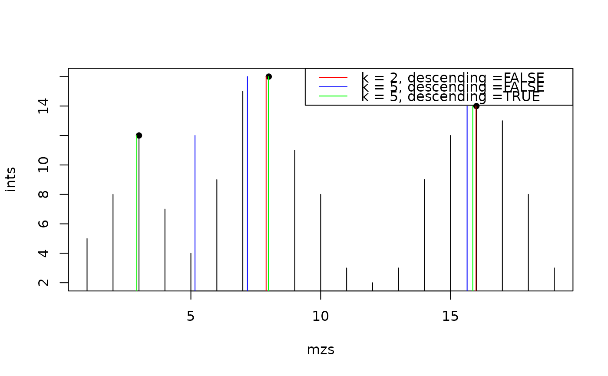

This function refines the centroided values of a peak by weighting the y values in the neighbourhood that belong most likely to the same peak.
refineCentroids(x, y, p, k = 2L, threshold = 0.33, descending = FALSE)
| x |
|
|---|---|
| y |
|
| p |
|
| k |
|
| threshold |
|
| descending |
|
For descending = FALSE the function looks for the k nearest neighbouring
data points and use their x for weighted mean with their corresponding y
values as weights for calculation of the new peak centroid. If k are chosen
too large it could result in skewed peak centroids, see example below.
If descending = TRUE is used the k should be general larger because it is
trimmed automatically to the nearest valleys on both sides of the peak so the
problem with skewed centroids is rare.
Other extreme value functions:
.peakRegionMask(),
localMaxima(),
valleys()
Sebastian Gibb, Johannes Rainer
ints <- c(5, 8, 12, 7, 4, 9, 15, 16, 11, 8, 3, 2, 3, 9, 12, 14, 13, 8, 3) mzs <- seq_along(ints) plot(mzs, ints, type = "h")## Use the weighted average considering the adjacent mz mzs1 <- refineCentroids(mzs, ints, pidx, k = 2L, descending = FALSE, threshold = 0) mzs2 <- refineCentroids(mzs, ints, pidx, k = 5L, descending = FALSE, threshold = 0) mzs3 <- refineCentroids(mzs, ints, pidx, k = 5L, descending = TRUE, threshold = 0) points(mzs1, ints[pidx], col = "red", type = "h")## please recognize the artificial moved centroids of the first peak caused ## by a too large k, here points(mzs2, ints[pidx], col = "blue", type = "h")legend("topright", legend = paste0("k = ", c(2, 5, 5), ", descending =", c("FALSE", "FALSE", "TRUE")), col = c("red", "blue", "green"), lwd = 1)